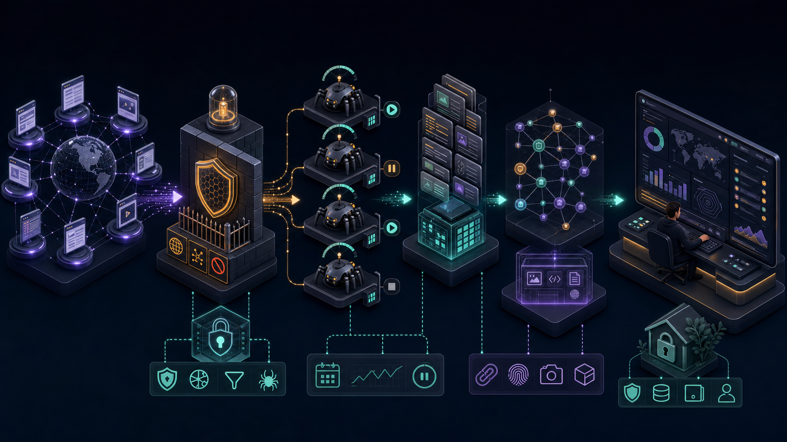

Open source · MIT · Local first
Turn public websites into inspectable evidence.
Skein is an observable web intelligence crawler built for engineers who need bounded collection, visible progress, strict network safety, and structured results they can verify.
- 3
- runtime layers
- 8
- product surfaces
- 100%
- local identity
- 0
- cloud accounts required
Interactive product tour
See the workflow before you install.
This browser-only tour uses safe sample data. Clone Skein to run the real crawler against authorized public websites.
Workspace / Overview
Good afternoon, analyst.
New bounded crawl
What public website should we inspect?
Tour data is simulated in your browser. The local edition performs the real robots-aware crawl.
Live pipeline
Idle
Ready to scan
Validate
Policy
Discover
Fetch
Extract
Finalize
Evidence stream
Live
Observable by default
- Demo workspace readysystem
- Network safety kernel loadedpolicy
Run history
Every lifecycle remains inspectable.
| Target | Status | Pages | Duration | Finished |
|---|---|---|---|---|
| example.org | Complete | 8 / 8 | 3.8s | 12 min ago |
| iana.org | Complete | 12 / 12 | 5.2s | Yesterday |
Structured evidence
Search, filter, inspect, export.
| Page | Title | Status | Words | JSON-LD |
|---|---|---|---|---|
| / | Example Domain | 200 | 28 | 0 |
| /domains | Domain Names | 200 | 642 | 1 |
| /help | Redirected resource | 301 | 0 | 0 |
| /protocols | Protocol Registries | 200 | 918 | 2 |
System architecture
One observable chain from URL policy to evidence.
The React console talks to a FastAPI control plane. A Rust worker boundary handles hostile-network fetch concerns, while PostgreSQL provides durable runs, leases, lineage, audit events, and an outbox for scale-out operation.
- Validate destination before every request and redirect
- Keep crawl scope, body size, timeout, and concurrency bounded
- Expose phase progress, ETA, lifecycle actions, and evidence lineage

Built for trustworthy collection
Fast enough to explore. Strict enough to trust.
Observable
Progress, ETA, phase transitions, lifecycle controls, timings, and evidence remain visible.
Bounded
Scope, redirects, concurrency, timeouts, response bodies, and destinations are deliberately constrained.
Local first
Accounts live in your browser, crawling runs on your machine, and guest sessions vanish with the tab.
Composable
React, FastAPI, Rust, and PostgreSQL boundaries can evolve independently without hiding lineage.
Open source from the first thread
Inspect it. Run it. Improve it.
Skein is licensed under MIT and welcomes careful contributions to crawling, extraction, accessibility, security, observability, documentation, and developer experience.
git clone https://github.com/muhammadmahadazher/skein-web-intelligence.git
cd skein-web-intelligence
npm ci
npm run dev